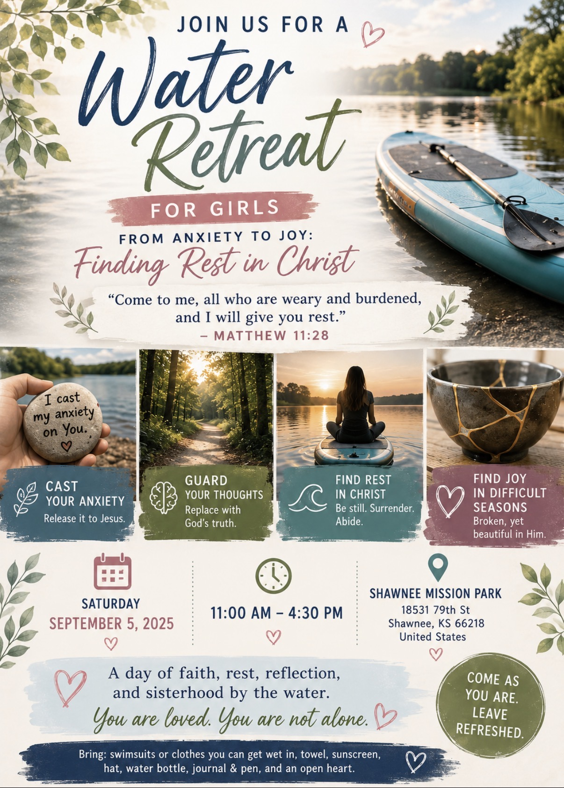
WOMEN'S RETREAT • SEPTEMBER 4
Water Retreat for Girls
From Anxiety to Joy: Finding Rest in Christ
A day of faith, rest, reflection, activities and sisterhood by the water.
RegisterReal Conversations • Authentic Stories • Meaningful Connections
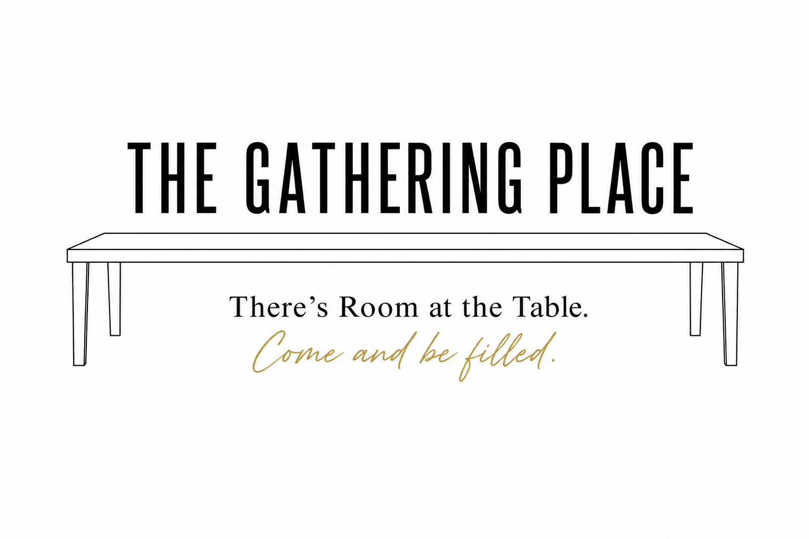
A space for real conversations, authentic stories, meaningful connections, community and growth that goes deeper than what people see on the outside.


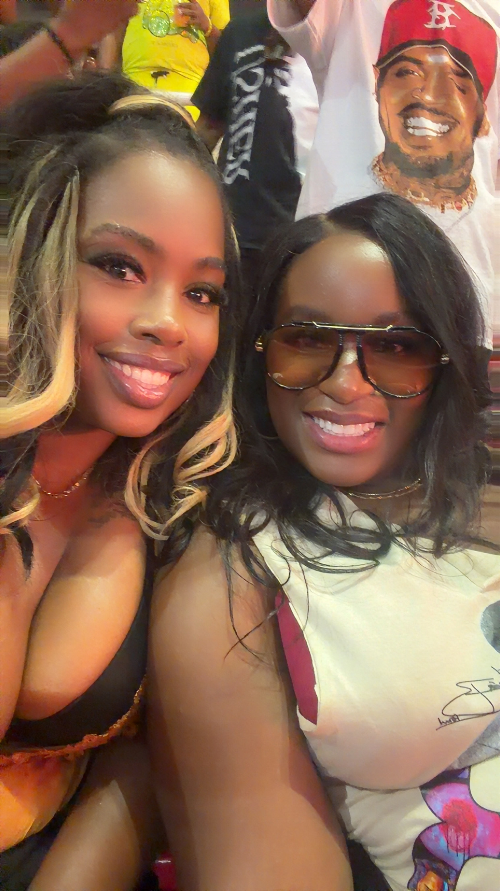
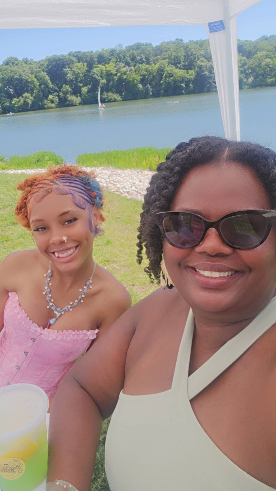
WEEKLY REFLECTION
A weekly reflection on Scripture, life, and the lessons found beneath the surface.
THIS WEEK'S REFLECTION
Sometimes the lesson is found in what we stop long enough to notice. Take a few moments to reflect, listen, and go beyond the surface.
New reflection added weekly.
GROW WITH US
Come as you are. Bring your Bible, your questions, your experiences and an open heart.
CURRENT STUDY
Galatians 5:22–23
This study explores the fruit of the Spirit, the difference between works and fruit, and how a life connected to Christ produces character that can be seen, experienced and reproduced in the lives of others.
Every Saturday
8:30 AM
Online via Zoom
KEEP GROWING
Review previous Bible studies and continue studying throughout the week.
Our lesson library is growing. Previous studies will be added here.
REAL STORIES • REAL CONVERSATIONS
Beyond the Surface exists to create a space for real conversations, authentic stories, and meaningful connections that go deeper than what people see on the outside.
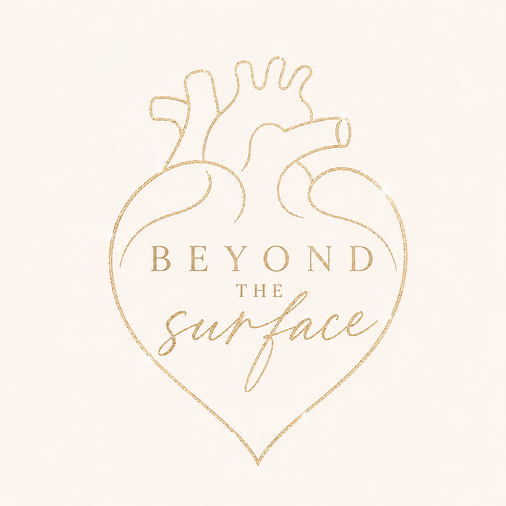
BEYOND WHAT PEOPLE SEE
Relationships. Growth. Purpose. Faith. Questions. Challenges. Healing. And the parts of life we do not always talk about publicly.
We are creating space to listen, learn from one another, ask better questions, and have conversations that matter.
YOUR VOICE MATTERS
What do you want to hear us talk about next? Send us the questions you've been thinking about, wrestling with, learning about, or wishing someone would talk about.
Let's go beyond the surface.
GET OUT • CONNECT • GIVE BACK
Gather with us, support causes that matter, discover resources and connect with the community.

WOMEN'S RETREAT • SEPTEMBER 4
From Anxiety to Joy: Finding Rest in Christ
A day of faith, rest, reflection, activities and sisterhood by the water.
Register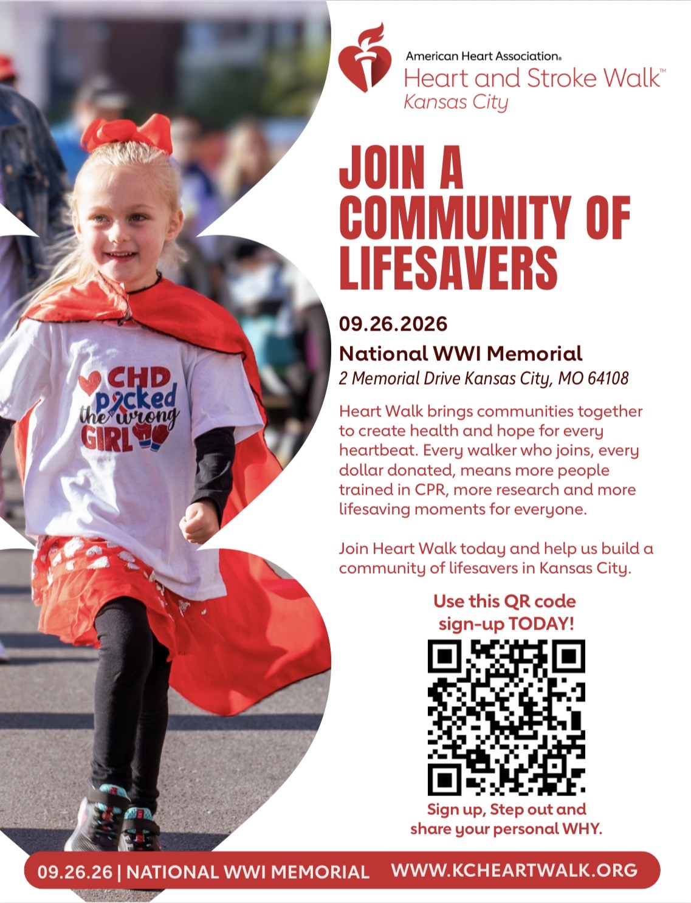
HEART & STROKE WALK • SEPTEMBER 26
HER STORY • EBONY
Ebony experienced a stroke at just 25 years old. Today, she shares her story to bring awareness, encourage others to know the signs of stroke, and remind families that health conversations should not wait until a crisis happens.
Watch Ebony's Story →Join us as we walk with Ebony and support heart and stroke awareness, healthier families, lifesaving education, research and hope.
Join / Support the Team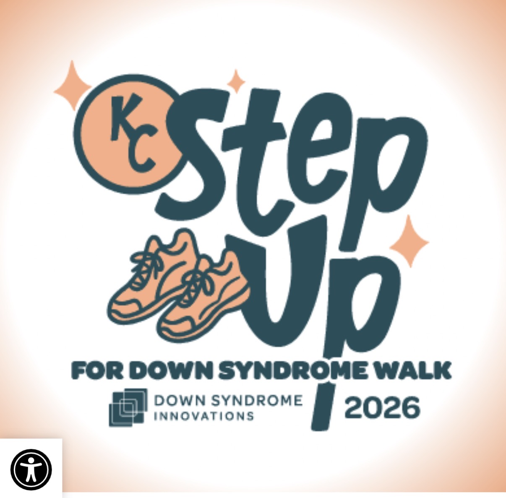
STEP UP WALK • OCTOBER 3
Walk with us as we celebrate Kia and support individuals with Down syndrome and their families.
Donations help provide resources, programs, opportunities and community support.
Support Kia's Team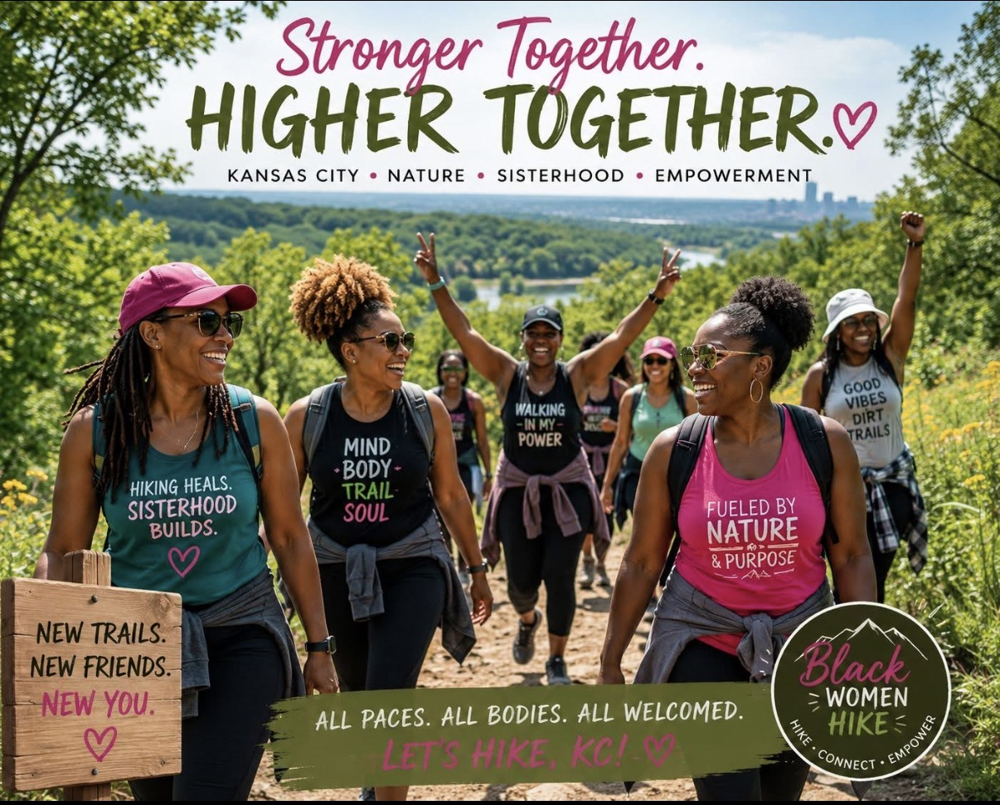
GET OUT & CONNECT
Fresh air. Movement. Conversation. Connection. Join women in the community for outdoor adventures, friendship and a chance to get moving together.
Join the Hiking GroupCOMMUNITY RESOURCE
Career guidance, résumé support, interview preparation, professional development and help navigating your next move.
Visit Job CoachWE'RE HERE TO PRAY WITH YOU
Whatever you're facing, you don't have to carry it alone. Share your prayer request and allow our community to stand with you.
“Casting all your care upon him; for he careth for you.”
1 Peter 5:7 KJV
MOMENTS WE'VE SHARED
Faith • Friendship • Service • Sisterhood


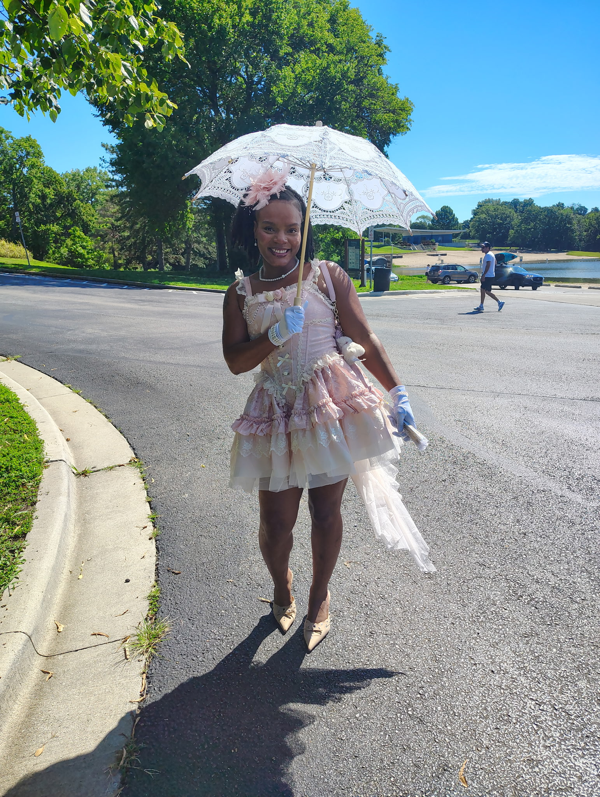
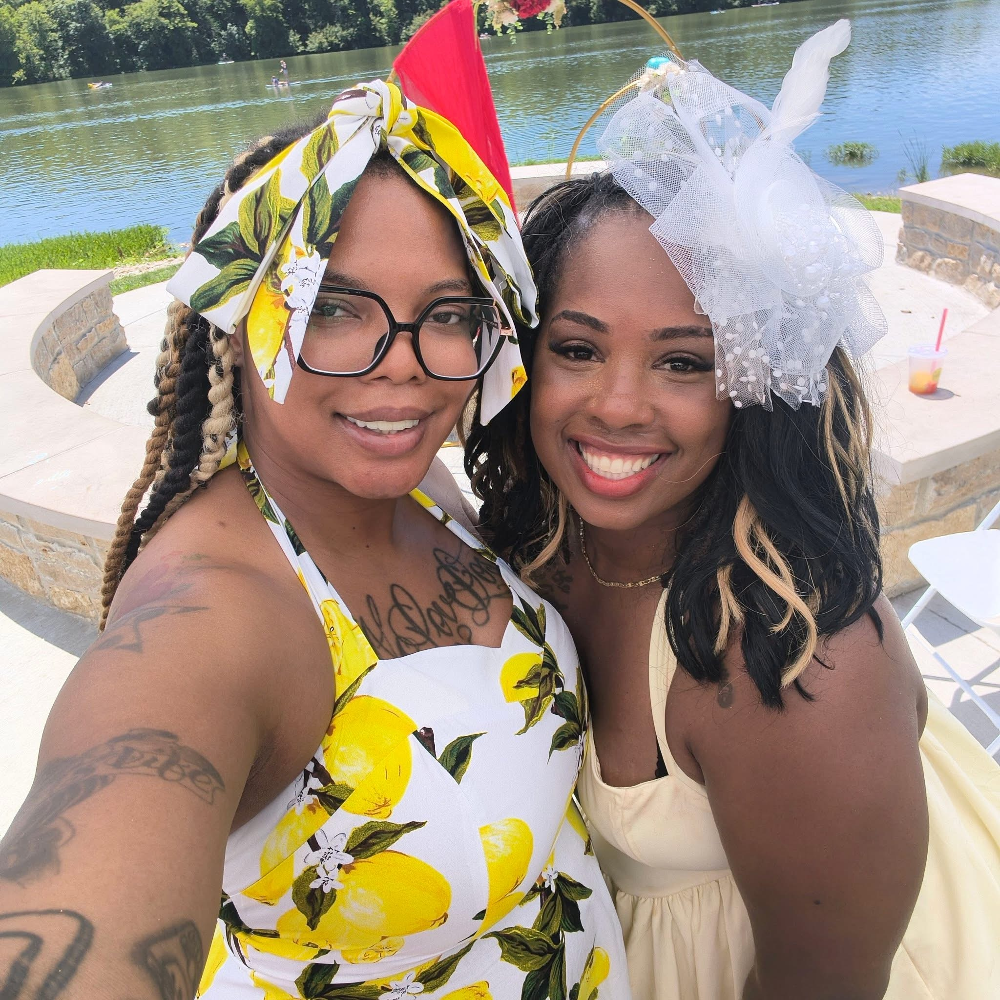
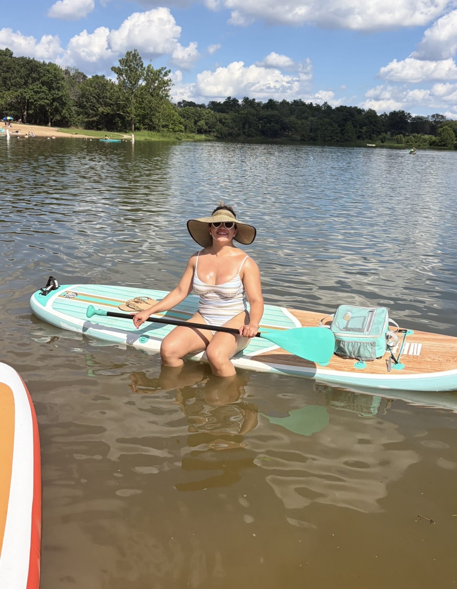